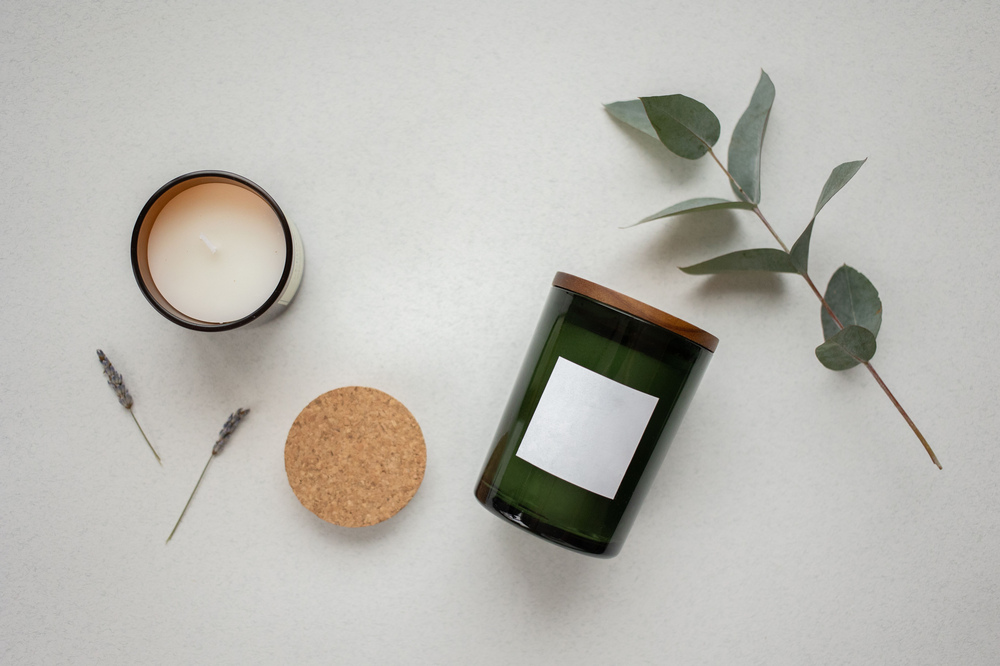

OUR STORY · OUR CRAFT
More Than a Candle
Creating little moments of comfort through thoughtfully handcrafted scented candles, made with care in the Philippines.
Discover Our StoryGET TO KNOW US
A Little Light Can Make a Difference
Dear Candle PH was created around a simple idea: everyday moments deserve to feel special. Sometimes, all it takes is a familiar scent, a quiet room, and a little time for yourself.
Our candles are made to bring warmth and comfort into your space. Whether you are winding down after a long day, spending time with loved ones, or enjoying a peaceful morning, we hope our scents become part of your favorite memories.
EXPLORE OUR CANDLESA quiet moment, poured at a time.
THE HEART OF DEAR CANDLE PH

MADE WITH CARE
Inspired by the Little Things
We believe that comfort can be found in the simplest things: the soft glow of a candle, the scent that reminds you of home, and the peaceful feeling of having a moment to yourself.
These little things inspire Dear Candle PH. Our goal is to create scented candles that feel welcoming, look beautiful in your space, and make ordinary days a little more meaningful.